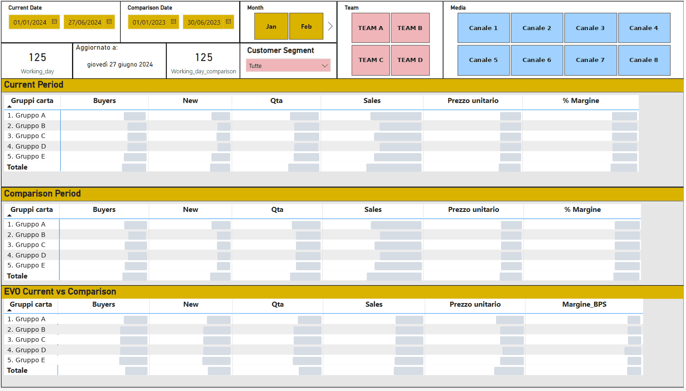

The challenge
Comparing sales periods looked simple but was misleading: two months, or two years-to-date, rarely contain the same number of working days. The sales team needed a reliable way to compare performance by product group, team and channel.
The solution
Sales data is prepared in SAS and analysed in a Power BI report built around three blocks:
Current periodBuyers, new customers, quantity, sales, unit price, margin
Comparison periodThe same metrics for any period you choose
EvolutionPercentage change and margin shift between the two
What the solution includes
Dynamic working daysWorking days calculated for both periods
Multi-year viewMonthly sales across three years
Team filtersResults by sales team
Customer segmentDrill into any customer segment
Marketing channelPerformance by acquisition channel
Data freshnessLast refresh date always visible

Results
- Fair comparisons between periods with different working days
- Growth and decline visible by product group, team and channel
- Margin changes tracked next to sales volumes
- Interactive exploration through slicers instead of static extracts
Stack
Power BI
SAS
DAX
Client names and confidential figures have been omitted. The images on this page contain no client data.